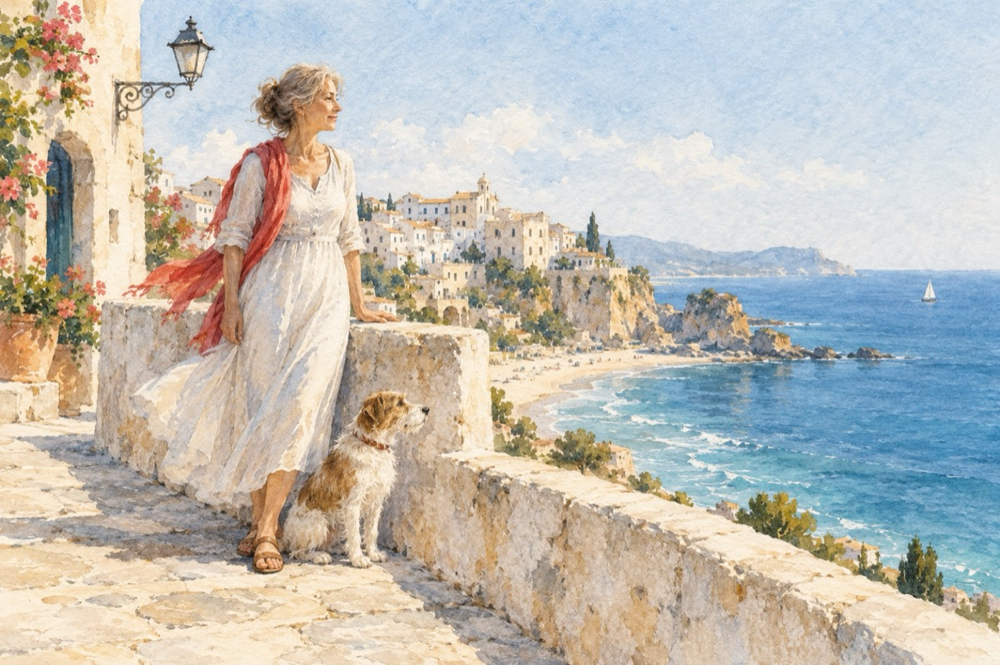

Doamna cu cățelul
Sperlonga – Salette Beach, Italia.
Italia
Personajul principal
La Sperlonga litoral
E demnă de luat în seamă
Este chiar doamna patroană.
Nici nu dă de bănuit
Că-i un personaj vestit
Nu se dă a fi patroană
Cu greu de o bagi în seamă.
Știe și la mătură
Să scuture o pătură
Spală, curăță pe jos
Tot ce face-i de folos.
Știe să fie și doamnă
Are chemare, te-ndeamnă
Frumusețea încă-o poartă
Și „cere” a fi curtată.
Vise, speranțe, dorințe!
Dar toate rămân ca țel
Șanse nu-s de biruințe
Că-i păzită de-un cățel!
Vasile Groza